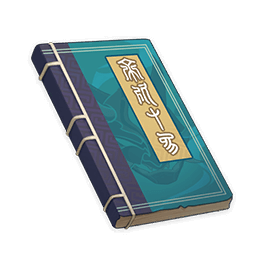

Liyue · Books & Literature
Yakshas: The Guardian Adepti
This Sumeru Akademiya compilation of Liyue folklore names five powerful yakshas and recounts the karmic burden of their campaign against the lingering evil of defeated gods.

A Sumeru Compilation of Liyue Folklore
Yakshas: The Guardian Adepti is a single quest-item document the Traveler encounters during Xiao’s Story Quest, Alatus Chapter: Act I — Butterfly’s Dream. It belongs to a Sumeru Akademiya encyclopedia about the customs and folklore of Liyue. Its literary framing matters: this is a compiled account of a tradition, not a signed eyewitness report or a neutral military roster.
The account describes the aftermath of old divine wars: defeated gods were buried beneath the earth, and their resentment and miasma left plagues and other dangers for people to endure. Rex Lapis called on yakshas to purge those forces. The text singles out five as the strongest and gives their names: Bosacius, Indarias, Bonanus, Menogias, and Alatus.
The Cost of Their Duty
The book presents the yakshas’ long campaign as a source of terrible karmic burden. Their violence against demonic forces brought them into contact with suffering and resentment until the burden broke the group apart. It says that three perished, one disappeared, and Alatus alone remained to continue the work.
Xiao’s story quest supplies the surrounding frame for reading the account, while later character material identifies Alatus as Xiao. The book itself does not assign the five yakshas elements, provide a complete biography for each, or name the surviving yaksha Xiao; those details should be attributed to their own records rather than folded into this folklore text.
This is an original CoreGG reading guide, not an official HoYoverse article or a reproduction of the game text. Source links below identify the records used so you can check the original context.
Sources & references
Check these sources for the original game text and reference trail.